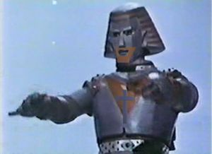

Ultra Jesus
 De: La Frikipedia, la enciclopedia extremadamente seria.
De: La Frikipedia, la enciclopedia extremadamente seria.
 Ultra Jesus LISTO PARA PELEAR!
Primero fue Jesús de Neanderthal, luego vino Jesús de Nazaret, en el medio Jesús de Chamberí, o mucho tiempo despues vino el Cyberjesús,incluso hoy en dia los científicos todavía investigan quién vino primero, Jesús o Cristo. Pero al fin, luego de tanta espera, el mundo seguía siendo una tremenda mierda, así que el Señor Dios se encabronó y se puso a mirar la tele. Lamentablemente, lo único que había, era los Power Rangers; de ahi se le dio la idea de crear un Ultra Jesus. Para esto fue a consultar a Loki, quien bajo la asistencia de Mc Gyver diseñó 5 leones que se unian formando "ULTRA JESUS". Estos puede ser activados solamente con unas llaves super secretas, que poseen actualmente:
Poderes de Ultra Jesus
Su mascota preferida: Doris
- CORRE en el agua
- Vuela sobre el piso
- Nada en el agua
- Busca en tu mazo una carta con la palabra Jesus en el nombre, ponla en tu mano y mezcla el mazo.
- Resurrection (Revive aliados caidos con toda la vida, vuelve a matar a los no muertos.)
- Divide símbolos griegos entre cero sin calculadora.
- Cura todas las enfermedades, incluyen envenamiento, leprosidad, e infertilidad,falta de erccion
- Multiplica comida
- Brilla en la oscuridad!
- Destruye demonios cuando entra en juego.
- Vision de rayos Z, (como los X pero el doble de guay.)
- Inmunidad a la ebriedad.
- Vuela
- Crece de verdad!!
- Vuela en el espacio
- Nunca enferma
- Dispara monos de los ojos.
- Puede moverse a 2d10, pero le errara al proximo ataque.
- Eyacula rayos laser
- Puede violar a Michael Jackson
- Da charlas sobre Jovenes despreocupados, seguridad vial, sexo seguro y como deshacerse higienicamente de una prostituta muerta.
- lanza rayos de protón
- Dar de comer testiculos a Doris
- Defeca arcoirises.
- Puede ver en la oscuridad.
- Sabe la combinación de la caja fuerte.
- Se prostituye en el agua
- tiene un exoesqueleto como el de wolverine
- habilidad para manejar el latigo y golpear a esos comerciantes que venden todo tipod e wea en al tv
- lanza cruces como en castlevania y nicikiera es d ela familia bermont
- puede sumar 1+1
- su palabra mueve montañas
- tiene tanta fe que puede lanzar el hadouken solo suando su fe
Enlaces externos
Ultrajesús haciendo de las suyas
Autor(es):
- Krusher
- Frikiman
- Aque
- Khazike Khashondo
- Z
- Baofu
- Rhaj
- Maxix
- Prototype
- Dark temptation
Frikipedia 2005-2016, Licencia
GFDL 1.2 - Extraído por FrikiLeaks